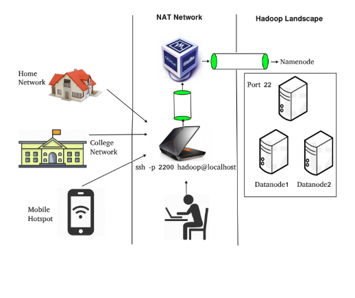
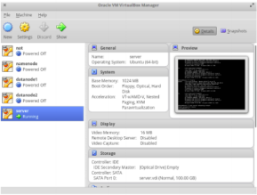

Nat Network¶
Setting up a new Nat network¶
After clicking on file, click on preferences¶
Click on Network¶

Click on plus sign on the right hand side of the window, it will a new “NatNetwork”.¶

Double click on “NatNetwork” &¶
- update the following :
- set the network name “hadoop”
- set network CIDR: “192.168.200.0/24”
Click on plus i.e on the right hand side of the window to set the port forwarding rules.¶

Set a new rule name ‘ssh’ set the following variables¶
- Host IP : 0.0.0.0
- Default Hostport : 20022
- Guest IP: 192.168.200.10
- Guest Port : 22

Afte clicking on settings choose Network, now choose from Birdge Adapter to NatNetwork and select the name according to your connection, in this case hadoop.¶

Send files over NatNetwork using the following rsync command
hadoop@~ rsync -avz "ssh -p $portnumber" /local_path_to_file user@remoteip: /destination_directory